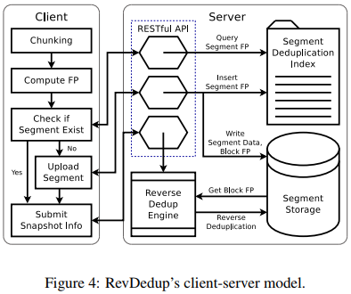

| Venue | Category |
|---|---|
| ACM APSys'13 | Deduplication Restore |
RevDedup: A Reverse Deduplication Storage System Optimized for Reads to Latest Backups1. SummaryMotivation of this paperRevDedupImplementation and Evaluation2. Strength (Contributions of the paper)3. Weakness (Limitations of the paper)4. Future Works
Deduplication introduces fragmentation that degrades read performance. This paper proposes RevDedup which can optimize reads to the latest backups of VM images via reverse deduplication.
Idea: shift fragmentation to old data while keeping the layout of new data as sequential as possible.
Some assumptions
The fragmentation problem of the latest backup is the most severe since its blocks are scattered across all the prior backups.
To mitigate this impact, this paper proposes to do the opposite deduplication.
check if any already stored blocks can be represented by the new blocks to be written. keep the storage layout of the newer backups as sequential as possible.
- a server stores deduplicated VM images and the deduplication metadata
- multiple clients run the active VMs
- have smaller chunking overhead than variable-size chunking.
- apply deduplication to large fixed-size units called segmemts, (several megabytes)
- inside single versions VM across different versions VM across different versions VM in different machines.
- large segment size can amortize disk seek while still achieves high deduplication efficiency.
uses a pre-defined threshold (namely, rebuild threshold) to determine how to determine how to rebuild a segment excluding removed blocks. rebuild threshold is configured to trade between disk fragmentation and segment copying time.
argue that the index has low memory usage when using large-size segments. SHA-1 for block fingerprints and segment fingerprints
The metadata of each block in each segment is stored in disk.
fingerprints and reference counts of each block
Multi-threading Communication: RESTful APIs
